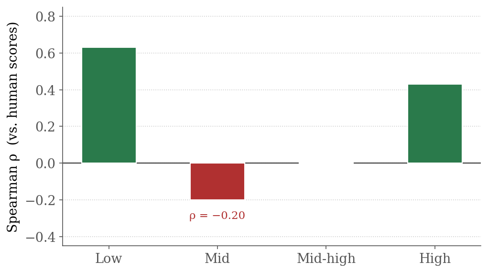
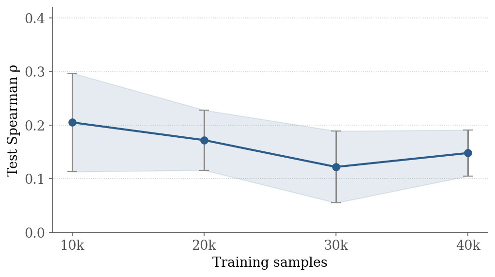
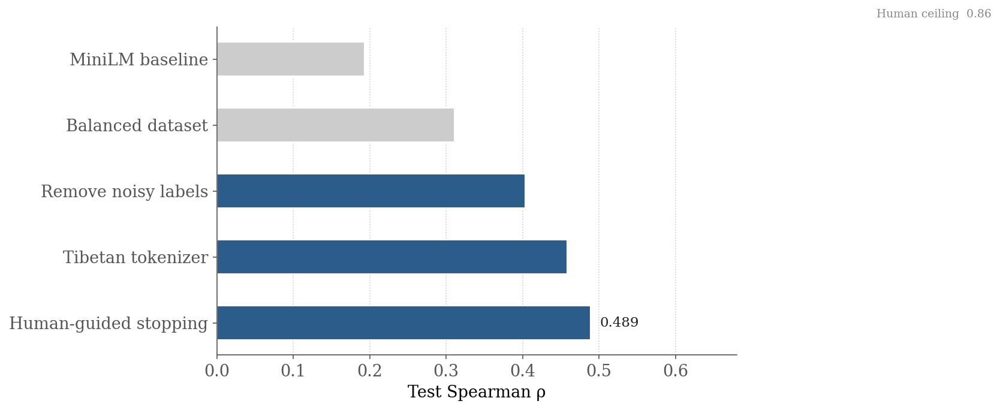
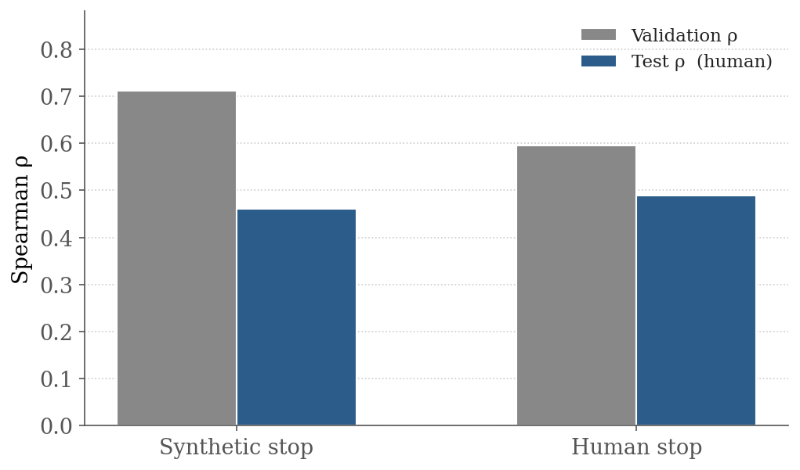
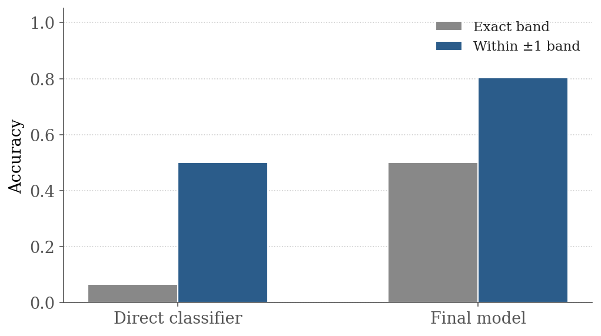

Can a lightweight AI model learn to judge translation quality well enough to be a useful screening tool?





| Improvement | What it addressed | Test ρ |
|---|---|---|
| MiniLM baseline | Starting point | 0.193 |
| Balanced dataset | Training data skew | 0.311 |
| Drop mid-band noise | GEMBA's blind spot labels | 0.403 |
| Tibetan tokenizer fix | Model can't read Tibetan script | 0.458 |
| Human-guided stopping | Training signal mismatch | 0.489 |